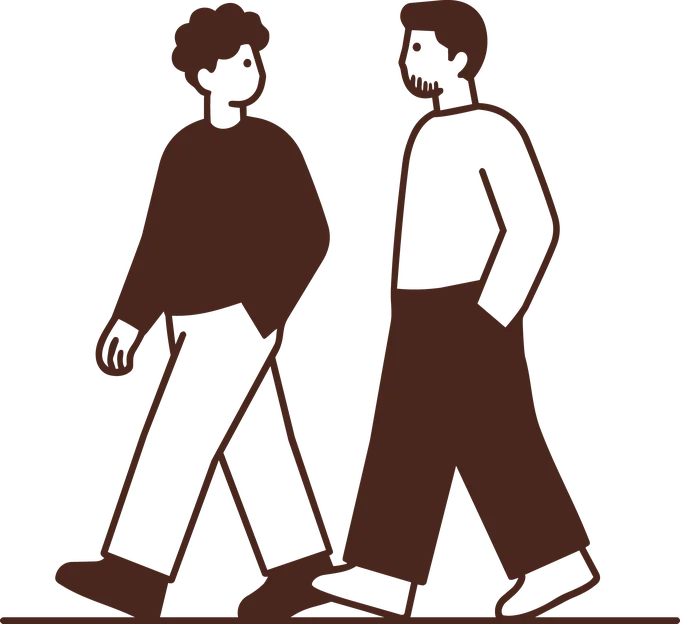
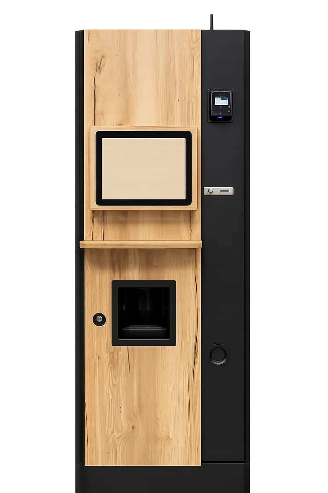

Café
Café de spécialité, torréfié à Lyon.
Du café responsable au cœur de votre établissement
The Corner installe et gère l'espace de pause de votre établissement : installation, entretien, réapprovisionnement, vous n'avez rien à faire.
Café de spécialité
Torréfié à Lyon
Ancrage local
Une équipe qui se déplace
Expertise
Pensé pour le supérieur
Le constat
Dans beaucoup d'établissements, la pause café repose encore sur des machines vieillissantes, un café standardisé et une expérience qui n'a pas vraiment évolué.
On l'a vécu nous-mêmes comme étudiants avant de le vivre comme entrepreneurs : le même café industriel, campus après campus. C'est exactement pour ça que l'on a fondé The Corner.
Découvrir notre histoire →

Notre réponse
Un café sélectionné et torréfié à Lyon avec un véritable expert du café.
Une machine reconditionnée à neuf et habillée de bois par un artisan local.
Marc de café revalorisé, matériel réemployé et partenaires locaux.
Nous suivons la qualité des boissons et les performances de chaque installation.
L'exigence d'un café local, directement dans votre établissement.
Plus que du café
Café, snacking, eau et solutions adaptées : nous construisons une offre cohérente avec votre établissement, vos usages et vos étudiants.
Café de spécialité, torréfié à Lyon.
Une offre adaptée aux moments de la journée.
Des équipements selon les besoins de l'établissement.
Pour l'établissement
Aucun investissement de votre part.
Rien à gérer au jour le jour.
Pris en charge de bout en bout.
Par les ventes réalisées dans votre établissement.
Vous nous confiez l'espace. Nous nous occupons du reste.
Ils nous font confiance
Témoignages
« Enfin un café qu'on a plaisir à boire entre deux cours. Rien à voir avec les distributeurs d'avant. »
« Rien à voir avec le café industriel d'avant. Simple, efficace, et vraiment bon. »
« En tant qu'étudiante internationale, je bois beaucoup de café. Celui-là est vraiment à la hauteur. »
« Le distributeur est devenu un vrai point de rendez-vous avant les cours. »
« Un café de spécialité sur notre campus, franchement on ne s'y attendait pas. »
« Le genre de détail qui change une journée de cours. On recommande le café à tous les nouveaux arrivants. »
Comment ça marche
On découvre votre établissement et vos besoins.
Implantation, fréquentation, offre et contraintes techniques.
The Corner prend en charge l'installation.
Maintenance, approvisionnement, suivi et amélioration continue.
Parlons de votre établissement et voyons ensemble ce que The Corner pourrait y apporter.
Parlons de votre établissement →Sans engagement · Étude personnalisée · Réponse sous 24h